채널: 장사건물주 강호동 | 길이: 21:01 | 날짜: 2026-10-15
핵심 내용
- 영상은 "과연 내가 일해서 이 돈을 벌려면 도대체 몇 년을 모아야 될까"라는 질문으로 시작해, 소액으로 경매·공매에 뛰어든 일반인들의 실제 수익 사례를 술자리 토크 형식으로 풀어낸다. 첫 사례는 서울에 사는 39세 주부 투자자로, 전세금 전액을 빼서 안양의 22평 3룸 빌라를 2억 8,500만 원에 낙찰받았다. 그녀는 규제 지역이라 대출이 어려운 상황에서도 전세금을 모두 투입했고, 심지어 살던 집까지 정리하고 비닐하우스 수준의 주거로 옮겨가며 투자에 올인했다. 강사와 진행자는 이 결단을 "이게 리스펙이야"라고 표현하며 극찬했고, 해당 물건은 5개월 만에 약 1억 5,000만 원의 차익을 남겼다.
- 이 영상의 핵심 메시지 중 하나는 "경매로 돈 버는 사람은 생각이 깊지 않다"는 역설적 주장이다. 진행자는 관상이 변했다는 농담과 함께 "생각이 없어요, 생각이 깊지 않다는 거야, 그래서 돈을 벌어"라고 말했고, 강사도 "이런 분들이 경매로 돈을 벌어요, 그래서 똑똑한 사람들이 오히려 못 해요"라고 동조했다. 이어 "진짜 돈 버는 머리는 또 다르다"는 말로, 학벌이나 논리적 사고와는 다른 실전형 의사결정 능력이 경매 수익의 핵심임을 강조했다.
- 첫 번째 사례의 물건은 경매가 아니라 공매로 취득한 것이다. 강사는 "사실 이거는 공매로 받았어요, 경매 아니고 공매로 받았는데 공매 수업도 들었었거든요"라고 밝혔다. 공매는 경매와 원리가 같지만 아파트·빌라·상가·토지 등 다양한 물건이 나오고, 특히 국가가 보유한 부동산이 주요 요지에 나온다는 점이 특징이다. 국가 소유 부동산은 매매뿐 아니라 임대도 나오며, 15년간 독점적으로 사용할 수 있는 장기 임대 계약이 가능하다.
- 공매 임대의 가격 경쟁력은 매우 크다. 강사는 "월세보다 한 10분의 가격"이라고 표현했으며, 실제로 지하철 한가운데 있는 지하 상가를 임대해 활성화시킨 지인의 사례를 들었다. 그 지인은 월 15만 원 수준의 임대료로 넓은 상가를 확보해 월 2,300만 원 상당의 가치를 창출하고 있으며, "이거는 뭘 해도 돈 벌어요"라고 말할 정도였다. 이에 진행자는 "공매 우리 쳐들어 갑시다"라고 농담 섞어 반응했다.
- 영상 중반에는 경매 학원 사기 사건이 소개된다. "유명 부동산 경매 전문가가 운영하는 학원에서 벌어진 일"로, 피해 금액이 100억 원대에 이른다고 언급된다. 강사는 경매의 핵심이 레버리지와 대출인데, 대출이 안 나오는 물건의 차액을 학원이 개인에게 빌려주는 '사적 융통' 구조로 운영되다가 금리 상승으로 수익이 줄면서 손실을 메우기 위해 추가 투자금을 받는 돌려막기로 번졌다고 설명한다.
- 경매를 하는 이유에 대해 강사는 "정말 돈이 없어서 사실 경매를 하는 거지, 많으면 일반 매매해야 돼요"라고 단언한다. 경매 시장에는 다양한 물건이 쏟아지지만 내가 원하는 상권·입지·수익률에 정확히 맞는 물건은 나오지 않는다. 따라서 경매는 아파트·빌라·호재가 있는 지방 땅 등에 적합하고, 건물 투자처럼 원하는 조건을 맞춰 사는 것은 불가능하다. 경매는 최종 목적지가 아니라 좋은 물건을 일반 매매로 살 수 있는 자본을 모으는 중간 단계라는 것이다.
- 두 번째 사례는 경상남도 김해에서 올라온 60대 중반의 평범한 주부다. 그녀는 20년 넘게 식당을 운영하다가 나이와 체력 문제로 은퇴했고, "부자 아빠 부자 아들" 같은 책을 읽으며 투자를 공부했다. 작년 10월 식당을 정리하고 김해에서 서울로 올라와 곧바로 강사를 찾아갔으며, 1월에 등록해 9개월 동안 5번 입찰해 1번 유찰, 4번 낙찰이라는 성과를 냈다.
- 김해 주부의 구체적 수익은 다음과 같다. 첫 번째 물건은 1억 5,600만 원에 낙찰받아 2억 원에 매도해 약 4,200만 원의 차익을 냈고, 두 번째 물건은 아직 명도 중이다. 세 번째 물건은 1억 4,700만 원에 낙찰받아 매매가 2억 2,300만 원 수준으로 약 6,000만 원의 차익이 예상된다. 나머지 물건은 아직 매도하지 않았거나 명도 초기 단계로, 그녀는 "내 돈으로" 투자했다고 밝혀 레버리지 없이도 상당한 성과를 냈음을 보여줬다.
- 명도에 대한 두려움은 초보 투자자의 가장 큰 심리적 장벽으로 묘사된다. 김해 주부는 처음에 명도 생각만 하면 밥이 넘어가지 않고 잠도 오지 않았다고 고백했다. 강사는 "걱정하지 말아라, 한 번만 딱 돌려보면 낙찰 받고 매도까지 한 번만 해보면 그때는 아무것도 아니다"라고 조언했고, 실제로 두 번째 낙찰 후 명도 단계에서 걱정이 사라졌다고 한다. 강사는 명도를 "사람과의 대화를 풀어 나가는 것"이며 "오는 것에 대한 대응의 영역"이라고 정의했다.
- 영상의 실전 분석 사례는 경기도 광주에 있는 빌라다. 낙찰가는 1억 6,810만 원이며, 전용 18평(아파트 25평형 대), 2층, 2013년 준공(2026년 기준 13년 차), 105동 단지형 빌라, 방 3개·화장실 2개라는 조건을 갖췄다. 강사는 "경매적으로는 기본적으로 시세보다는 싸게 사야 돼요"라며, 감정가는 법원이 산정한 것이지 시세가 아니므로 감정가 대비 낙찰가가 낮다고 무조건 좋은 물건은 아니라고 경고했다.
- 시세 파악 방법으로 네이버 부동산과 부동산 플래닛이 소개된다. 네이버 부동산에서 빌라·매매·방 3개·화장실 2개·사용승인 4~15년 필터를 적용해 주변 호가를 확인한 결과, 같은 건물 4층은 2억 9,000만 원, 옆 건물 1층은 3억 2,000만 원, 다른 18평은 2억 8,000만 원에 매물로 나와 있었다. 이어 부동산 플래닛에서 실제 거래 내역을 확인한 결과, 2026년 8월 4층 18평이 2억 5,800만 원에 중계 거래된 사실을 확인했다.
- 대출 구조는 경매·공매 시장의 큰 장점으로 설명된다. 일반 시장과 달리 경매·공매 전문 대출 상품이 따로 있어 낙찰가의 최대 80%까지 대출이 가능하다. 모든 은행이 취급하는 것은 아니어서 모르는 사람이 많지만, 취급 은행은 상당수 존재한다. 자기자본 20%에 취득세 1.1%와 부대비용을 더해 약 22%의 초기 투자금이 필요하며, 1억 6,810만 원의 22%는 약 3,700만 원으로 계산된다.
- 수익 계산은 다음과 같다. 입찰 당시 최저가는 1억 2,290만 원까지 유찰된 상태였고, 부동산 여러 곳에서 "즉시 매도하면 2억 4,000만 원, 1~2개월 기다리면 2억 6,000만 원도 가능하다"는 의견을 받았다. 2억 6,000만 원에 매도할 경우 낙찰가 1억 6,810만 원과의 차익은 9,200만 원이며, 투입 자본 3,700만 원으로 3~4개월 만에 약 200%가 넘는 수익률을 달성하는 셈이다. 강사는 "원금이 사실상 보장된다"며, 시세보다 싸게 사는 안전 마진 덕분에 "더 먹냐 덜 먹냐의 차이지 이를 일은 거의 없다"고 강조했다.
- 세금 문제도 상세히 다뤄진다. 단기 매도 시 일반적으로 차익의 77%가 세금으로 나가며, 80%로 잡으면 9,200만 원 차익 중 7,200만 원이 세금이 된다. 그러나 경매 시 '매매 사업자'를 활용하면 단기 매도에도 절세가 가능하며, 세율이 25%에서 20% 수준으로 낮아져 약 7,000만 원의 현금이 남는다. 강사는 "다 떼고도 현금이 7,000만 원 남는 거니까 괜찮은 장사"라고 평가했다.
- 영상 말미에는 구독자 선물이 등장한다. 강사는 원래 돈을 주고 봐야 하는 40분짜리 강의 4개를 구독자들에게 무료로 공개하겠다고 제안했다. 다만 "영상 댓글을 달고 신청해야 한다"는 조건을 걸었고, "공짜이고 귀한지 모르거든"이라며 여러 번 반복해서 볼 것을 당부했다. 마지막에는 "공부는 죽을 때까지 해야 돼"라는 말로 영상을 맺는다.
상세 분석
1. 오프닝 — "몇 년을 모아야 될까?"라는 질문
영상은 "과연 내가 일해서 벌려면 도대체 몇 년을 모아야 될까"라는 내레이션으로 문을 연다. 이 질문은 곧바로 "원래 전세 살고 있었는데 전세금 다 빼 가지고 여기다가 이제 한 거예"라는 한 투자자의 고백으로 이어진다. 진행자들은 "이게 리스펙이야"라며 감탄하고, "거의 200% 넘는 수익이야"라고 수익률을 언급한다. 이어 "그 나라가 갖고 있는 부동산들이 또 나와요, 목이 좋아요, 또 주요 요지에 다 있어"라는 설명이 나오는데, 이는 국가 소유 부동산이 공매 시장에 나올 때 입지가 좋은 경우가 많다는 점을 암시한다. "한 번만 폐찰되고 네 번을 다 낙찰받았거든요"라는 발언은 이후 등장할 60대 김해 주부의 사례를 예고하는 복선이다.
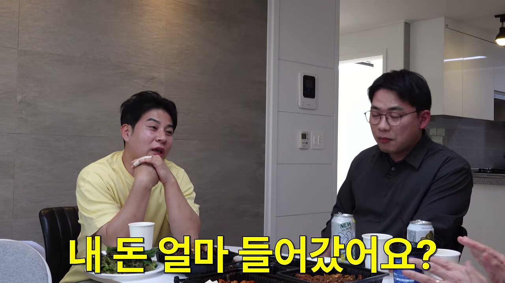
진행자들은 "와, 오늘도 또 설레인 영상이다", "빨리 와, 찍고 싶다"라며 들뜬 분위기를 보인다. "공동 현장 열립니다"라는 말과 함께 경매 현장을 여는 듯한 연출이 이어지고, "아주 좋아요, 열렸다, 열렸다"라는 반응이 나온다. 이는 경매 투자에서 '현장'과 '타이밍'이 얼마나 중요한지를 분위기로 보여주는 장치다. 곧이어 "형 왔네", "아이고, 오랜만에, 다 내 전라도 후배 동생이 성공해 버렸네"라는 인사가 오가며 술자리 토크의 서막이 열린다.
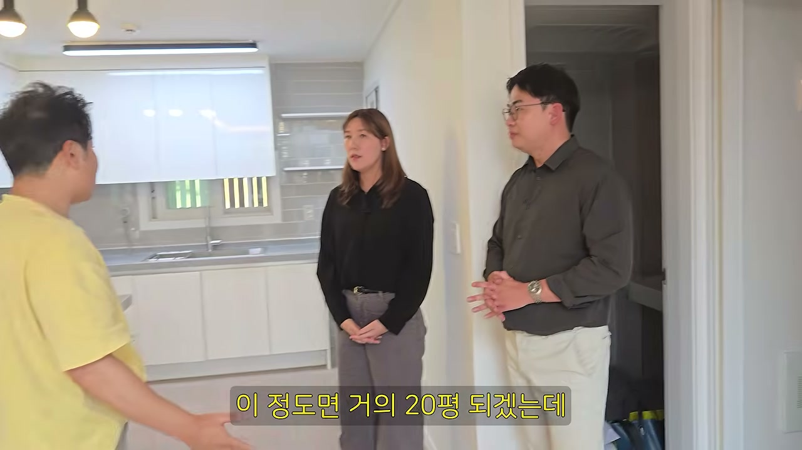
2. 첫 번째 사례 — 안양 22평 3룸, 전세금 올인
첫 번째 주인공은 "서울 중고에 살고 있는 39살 주부 투자자"다. 진행자는 "나름대로 팬심도 있어서 나왔구나"라고 말하고, 롤모델이냐는 질문에 "그래, 아니 뭐 돈 벌게 해 줘야 롤모델이야"라는 농담이 오간다. 이어 "리모델링 깨끗이 지금 해놨네"라며 집 상태를 칭찬하고, "쓰룸이 정도면 그래도 안양이니까"라며 입지를 평가한다. 안양이라는 지역적 특성과 3룸이라는 상품성이 어느 정도 시장성을 갖춘 조합임을 암시하는 대목이다.
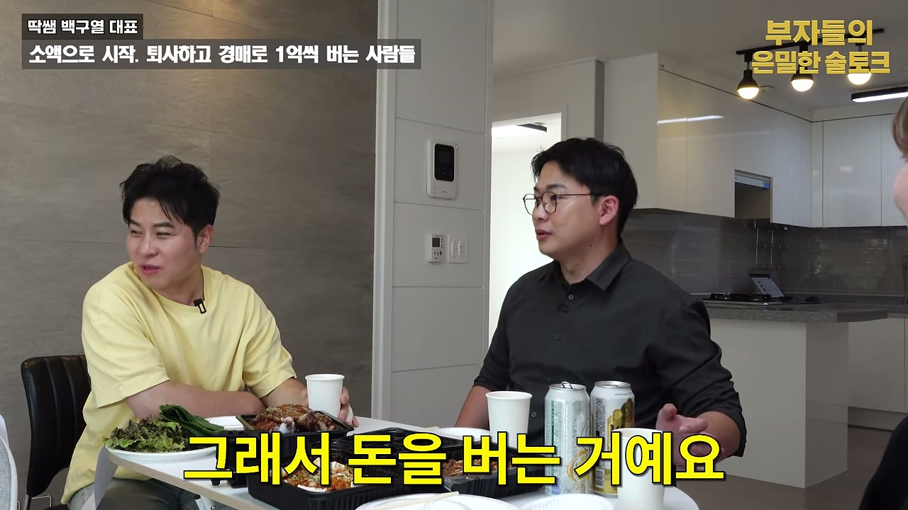
낙찰가는 2억 8,500만 원이다. 진행자가 "2억 8천에 실투가 얼마야, 그러면 여기 대출 받을 수 있었잖아요"라고 묻자, 투자자는 "여긴 규제 지역이어 가지고 대출을 받기는 어렵고"라고 답한다. 이어 "선한테 수업 들으러 갈 때는 여기 진짜 올인해야겠다 이렇게 생각이 들어 가지고 원래 전세 살고 있었는데 전세금 다 빼 가지고 여기다가 이제 한 거예"라고 설명한다. 이는 규제 지역의 대출 제약을 전세금 회수로 돌파한 전형적인 '소액·무레버리지' 투자 방식이다.
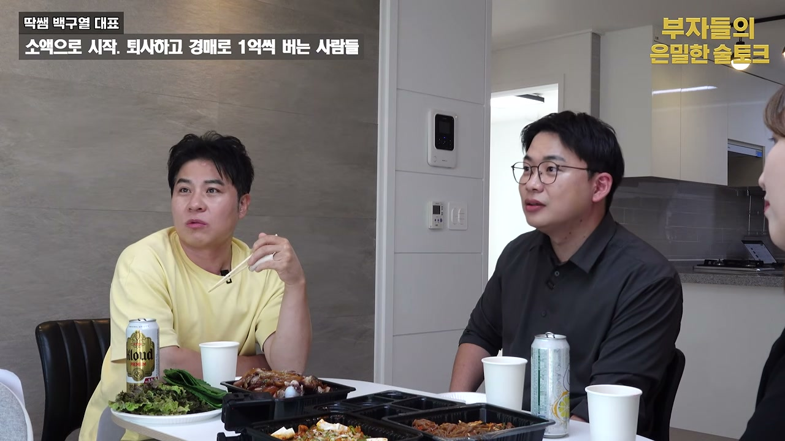
진행자는 "야 대단하다 이거야, 이게 리스펙이야"라며 거듭 감탄한다. 이어 "2억 9천, 3억이 여유돈 있으면 난 그거는 뭐 그럴 수 있다, 근데 살고 있는 그 집까지 빼 가지고 어디 비닐하우스 살면서, 옵션 더 아래에서 살면서 이런 걸 했다는 게 대단하다"라고 말한다. 즉, 단순히 여유 자금으로 투자한 것이 아니라 주거 자체를 희생하면서 투자에 나선 결단력을 높이 평가한 것이다. 리모델링·인테리어 비용은 약 600만 원이 들었고, "그 2억 9천 안에서 다 끝냈네"라는 말처럼 총투자금은 2억 9,000만 원 선에서 정리됐다.
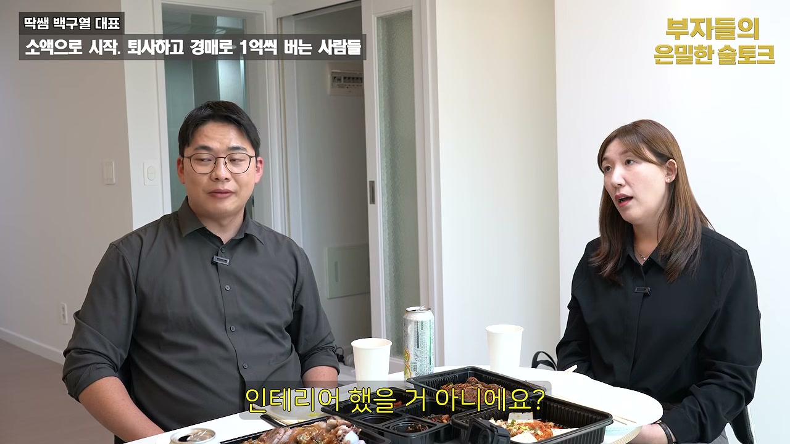
3. 5개월 만에 1억 5천 — 수익 구조와 원금 보장 논리
매수 시점은 2026년 3월이다. 진행자가 "몇 년도 샀어요?"라고 묻자 "3월 달에 낙찰받아서"라고 답하고, "26년 3월이네, 얼마 안 됐네, 따끈따끈한 이야기네"라는 반응이 나온다. 매도 시점은 2026년 8월로, "계약서 썼고" "잔금은 2번 달에 봤어"라는 설명이 이어진다. 진행자는 "세금 다 떼고도 한 1억 6,7천 남겠는데"라고 추정했고, 투자자는 "한 1억 5천 정도 남는 거 같아요"라고 답한다. 불과 5개월 만에 1억 5,000만 원의 차익을 실현한 것이다.
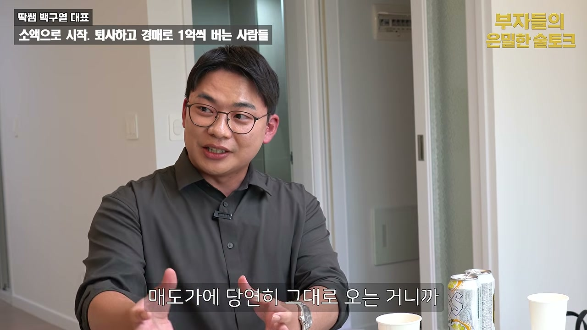
이어 "심지어 원금 보장"이라는 말이 나온다. 진행자가 "어떻게 원금 보장이 돼?"라고 묻자, 강사는 "이게 낙찰받은 금액은 매도가의 당이 그대로 오는 거니까 이미 보장돼 있는 거죠, 플러스 알파가 1억 5천이니까"라고 설명한다. 즉, 낙찰가 자체가 시세보다 낮게 형성되어 있어 매도 시 원금 회수는 사실상 보장되고, 그 위에 차익이 붙는 구조라는 것이다. 진행자는 "원금은 당연히 보장돼 있고, 플러스니까"라며 수긍하고, "야, 축하해요"라고 축하한다.
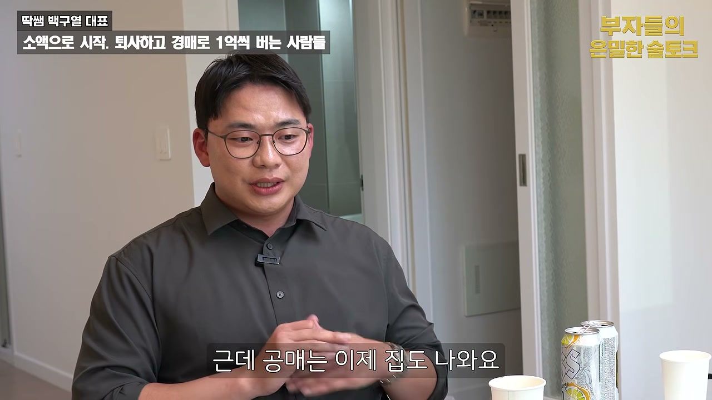
4. 공매의 세계 — 국가가 내놓은 부동산과 15년 독점 계약
첫 번째 사례의 물건은 경매가 아니라 공매로 취득한 것이다. 투자자는 "사실 이거는 공매로 받았어요, 경매 아니고 공매로 받았는데 공매 수업도 들었었거든요"라고 밝힌다. 진행자는 "아시는 분이 공매로 다양하게, 뭐 취미가 공매 들어갖고 뭐 사는 게 일이더라고"라고 말하고, 강사는 "이것도 중독이던데, 중독이에요, 똑같아요, 원리는 싸게 사는 거는 똑같거든요"라고 동의한다. 공매도 경매와 마찬가지로 '싸게 사는 것'이 본질이라는 설명이다.
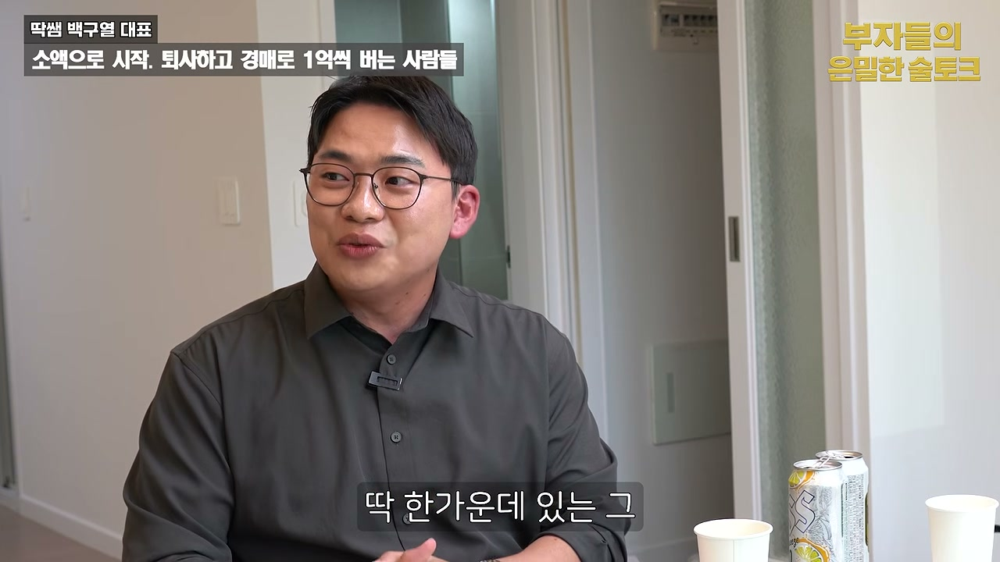
공매의 가장 큰 특징은 물건의 다양성이다. "공매는 이제 집도 나와요, 아파트도 나오고 빌라도 나오고 정말 많이 나오는데, 특히나 요새 자영업하시는 월세 구하거나 그럴 때 어떤 것들이 나오냐면 그 나라가 갖고 있는 부동산들이 또 나와요, 근데 그게 파는 것도 있지만 임대도 나와요"라고 설명한다. 즉, 국가가 보유한 부동산이 매매뿐 아니라 임대 형태로도 공급된다는 것이다. 진행자가 "몇십 년 임대 뭐 이런 거요?"라고 묻자, "그거 되게 길고요, 월세보다 한 10분의 가격이에요"라고 답한다.
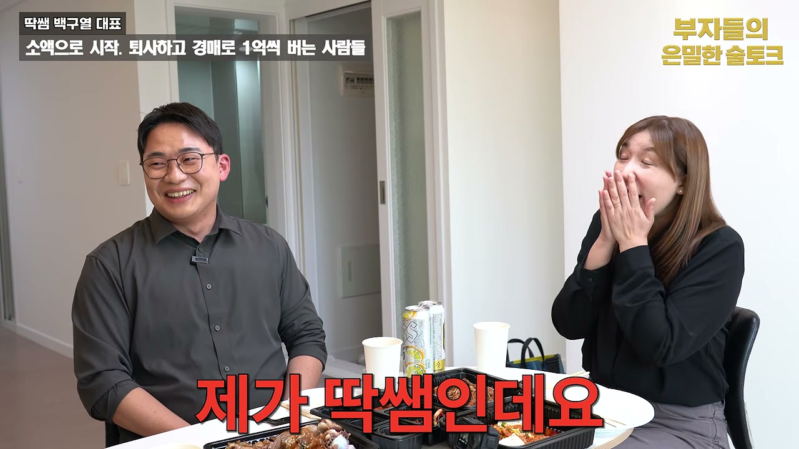
국가 소유 부동산의 입지적 우위도 강조된다. "나라가 갖고 있는 것들은 또 목이 좋아요, 또 주요 요지에 다 있어"라며, 공매로 계약하면 "한 15년 동안 거기를 독점적으로 쓸 수 있는 가격으로 줘"라고 설명한다. 실제 사례로 "지하철 딱 한가운데 있는 지하 상가"를 임대해 활성화시킨 지인이 소개된다. 그 지인은 유동인구가 많은 지하 상가를 임대해 영업 중이며, 월 15만 원 수준의 임대료로 "월 2,300만 원" 상당의 가치를 누리고 있다는 것이다. 강사는 "이거는 뭘 해도 돈 벌어요"라고 평가하고, 진행자는 "공매 우리 쳐들어 갑시다"라고 받아친다.
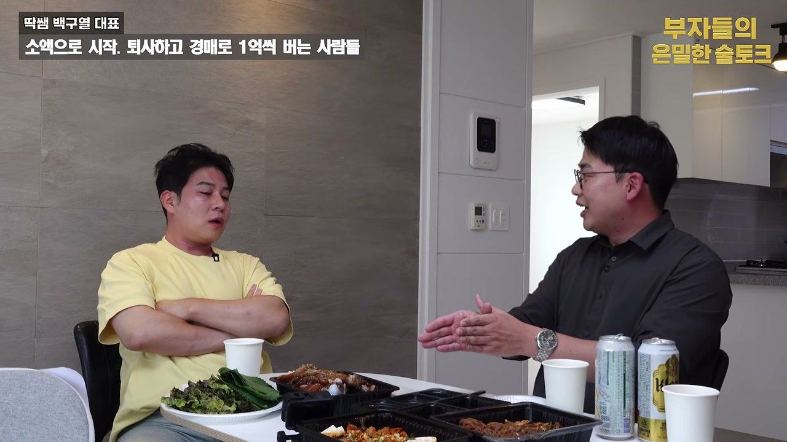
5. 경매 학원 사기 사건 — 레버리지의 그늘
영상 중반에는 경매 학원에서 발생한 대형 사기 사건이 뉴스 형식으로 소개된다. "유명 부동산 경매 전문가가 운영하는 학원에서 벌어진 일입니다, 피해 금액이 100억 원대인 걸로 추정되고 있습니다"라는 보도 내용이 나온다. 이에 진행자는 "우리도 안 당해야 되니까, 난 당하면 안 당한다기보다는 이 사람들도 처음엔 좋았을 거예요"라고 말한다. 즉, 사기 피해자들도 처음에는 정상적인 투자자였다는 점을 짚으며 경계를 늦추지 말자는 메시지를 전한다.
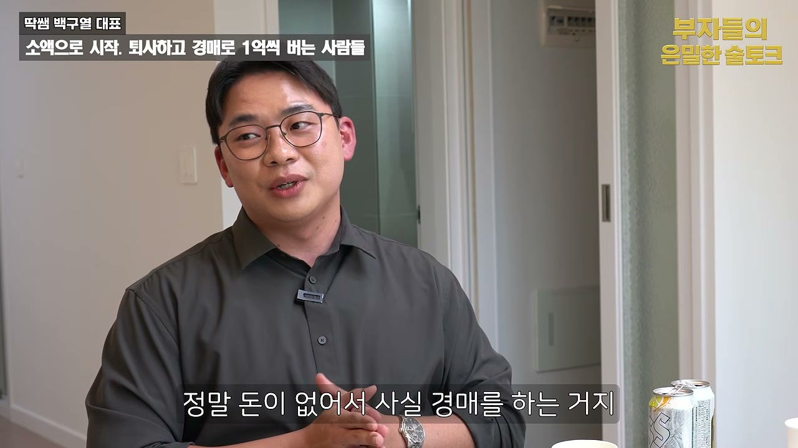
강사는 사기의 구조를 경매의 핵심인 '레버리지'와 '대출'에서 찾는다. "경매라는 걸 하면 레버리지를 일으켜야 되는 대출의 핵심인데, 사실 대출이 안 되는 물건들도 꽤 있어요, 물건은 좋은데 안 나올 수도 있어요, 그건 부족할 수도 있고, 근데 그 차만큼을 쉽게 말하면 학원에서 그 차익만큼을 개인한테 빌려 주는 거죠, 사적 융통이라고 해야 되나"라고 설명한다. 이어 "회원들의 투자금을 모아서 그걸 내주고 이자를 세게 한 다음에 그 이자 중에 일부를 배당식으로 해 주겠다라는 식으로 했는데, 금리가 오르니까 나가는 수익이 내리면 손해가 나겠죠"라고 덧붙인다.
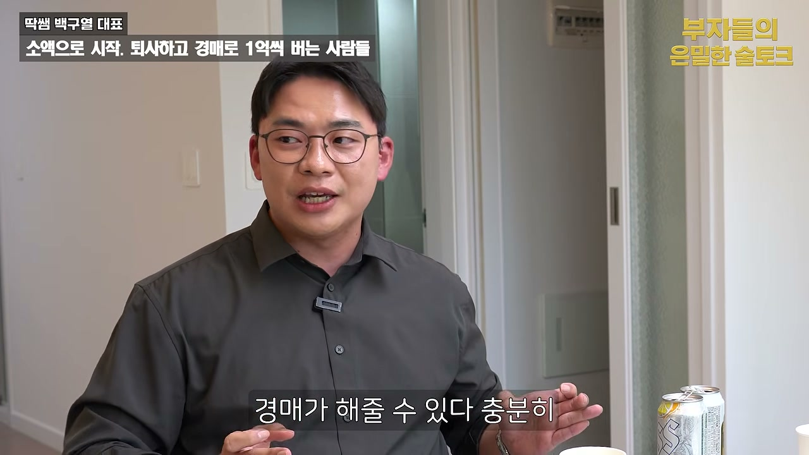
손실이 발생하자 추가 투자금을 받아 돌려막는 구조로 변질됐다는 설명이 이어진다. "이거 손 나가야 될 건 있으니까 추가로 더 돌려고 투자금 받아서 그 투자..."라며 "그래 본질... 예 그런 식으로 되다 보니까 안 된 거 같아, 아 금융업을 해 보려겠네"라고 정리한다. 이는 경매·공매 투자에서 레버리지가 양날의 검이라는 점을 보여주는 사례다. 대출이 잘 나오는 시장이라는 장점이 역으로 과도한 차입과 사기성 금융 상품의 온상이 될 수 있음을 경고하는 대목이다.
6. 경매를 하는 이유 — "돈이 없어서"와 중간 단계론
강사는 경매 투자의 본질을 "워낙 싸게 사니까 처음에 하잖아요"라고 설명한다. 이어 "야, 이거를 내가 이 돈을 수익을 내면 과연 내가 일하려면 도대체 몇 년을 모아야 될까"라는 질문을 던지며, "특히나 이제 많은 분들이 소액으로 진짜 시작하세요, 정말 돈이 없어서 사실 경매를 하는 거지, 많으면 일반 매매해야 돼요"라고 단언한다. 경매는 자본이 부족한 사람이 소액으로 시작할 수 있는 현실적인 수단이라는 것이다.
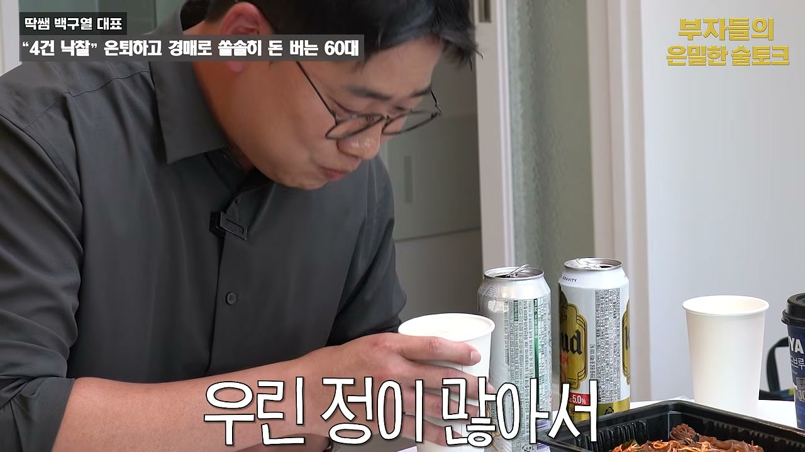
그러나 경매에는 명확한 한계가 있다. "경매라는 것 자체가 다양하게 쏟아지지만 내가 원하는 물건이 나오진 않아요, 그래서 나는 경매하지 말라 그래, 형은 건물이잖아, 맞아요, 달라요, 결이"라며 건물 투자와 경매 투자의 결이 다르다고 말한다. "내가 원하는 상권과 입지 수익률에 맞춰서 살 순 없다, 건물을"이라는 설명이 이어진다. 경매는 아파트·빌라·호재가 있는 지방의 땅 등에는 잘 맞지만, 상권과 입지를 골라서 사는 건물 투자에는 맞지 않다는 것이다.
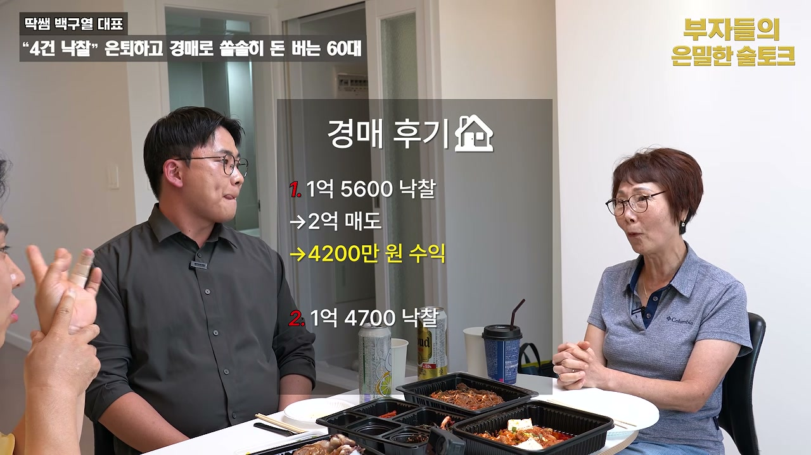
그럼에도 경매는 "중간 단계"로서 충분히 가치가 있다. "돈이 있는 분은 원래 그렇게 해야 되는 건데, 돈이 없으니까 사실 경매를 하는 거고, 사실 여기서 넘어 나오는 수익이 워낙 크다 보니까 생각보다 그게 모아지면 그때 이제 내가 그걸 가지고 일반 매매로 좋은 물을 내가 살면 되거든요"라고 설명한다. "처음부터 일학 청금이라기보다는 그 단계를 가기 위한 중간 단계의 역할을 경매가 해 줄 수 있다, 충분히 많은 분들에"라는 말로 경매의 위치를 정리한다. 즉, 경매는 최종 목적지가 아니라 더 좋은 물건을 살 수 있는 자본을 축적하는 디딤돌이라는 것이다.
7. 60대 김해 주부 — 9개월 만에 4번 낙찰
두 번째 주인공은 "경상도 경상남도 김해에서 올라온 60대 중반"의 "그냥 평범한 아줌마"다. 진행자는 "연세도 있으시지만 지방에서"라며 놀라워하고, "아 뭔가 진짜 젊어 보이구먼, 빨리 오셔"라고 맞이한다. 이 주부는 "지금 제가 이제 한 1월 달에 등록을 했다 했잖아요, 이렇게 한 지금 9개월 정도 됐는데, 제가 이제 도전을 한 다섯 번을 했거든요, 입찰을 한 번만 폐찰되고 네 번을 다 낙찰을 받았거든요"라고 자신의 성과를 소개한다.
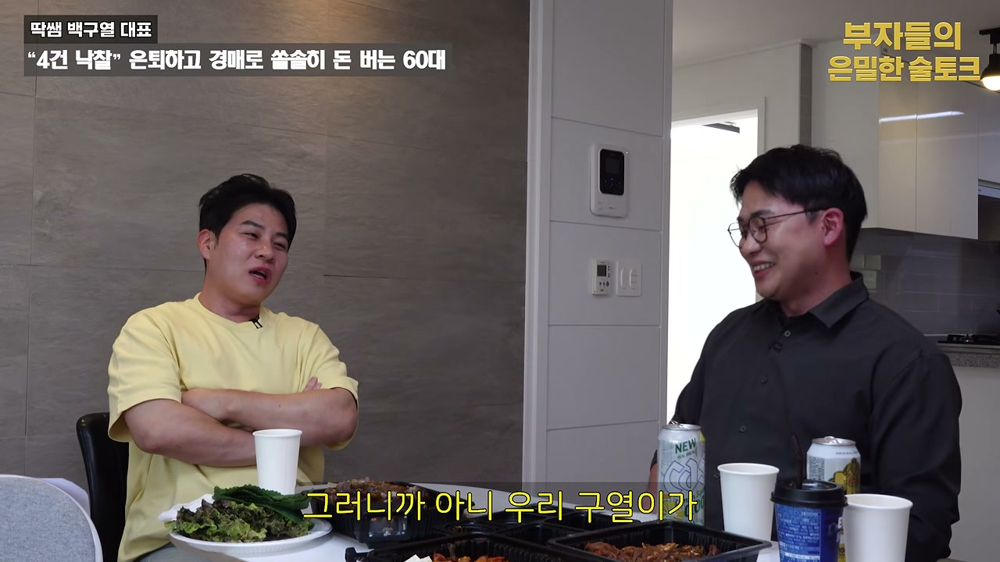
구체적인 수익 내역도 공개된다. "팔린 게 한 낙찰볼 때는 1억 5,600에 받아 가지고 2억에 팔았거든요, 그러니까 한 4,200만 원 정도 차익이 났고"라고 첫 번째 물건을 설명한다. 이어 "두 번째 이거는 아직 명도 중이고, 다른 거는 이제 얼마... 그거는 1억 4,700 정도의 낙찰을 받고 요거 이제 매매가는 한 2억 2,300 정도 예산을 하거든요, 예, 요것도 한 6,000 남짓"이라고 덧붙인다. 나머지 물건은 "아직 매도는 안 되고 갖고 있는 거" 또는 "명도하고 있는 초기 단계"라고 밝힌다.
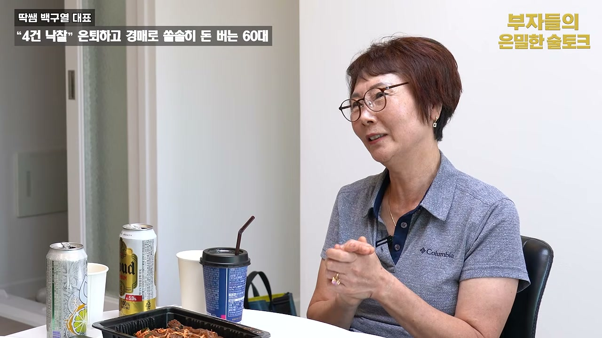
특히 주목할 점은 "내 돈으로" 투자했다는 부분이다. 진행자가 "내 돈 얼마 들어갔어요?"라고 묻자 "해도 되는데 그냥 편하게 하려고 그냥 내 돈으로"라고 답한다. 이는 대출 레버리지 없이도 9개월 만에 4건의 낙찰과 상당한 차익을 실현할 수 있음을 보여주는 사례다. 물론 모든 물건이 단기간에 현금화된 것은 아니고, 명도와 매도 과정이 진행 중인 물건도 포함되어 있다.
8. 명도 공포와 마인드셋 — "사람과의 대화"
김해 주부는 명도에 대한 두려움을 솔직하게 털어놓는다. "이제 명도 부분이 걱정이 되는 거예요, 근데 처음에는 명도 생각을 하니까 밥도 안 넘어가고 잠도 안 오는 거예요"라고 고백한다. 이에 강사는 "걱정하지 말아라, 이거는 한 번만 딱 돌려보면 낙찰 받고 매도까지 한 번만 해보면 그때는 아무것도 아니다"라고 조언했다. 실제로 두 번째 낙찰 후 명도 단계에 들어가 보니 "그런 것 한 개도 없는 거예요"라며 두려움이 사라졌다고 한다.
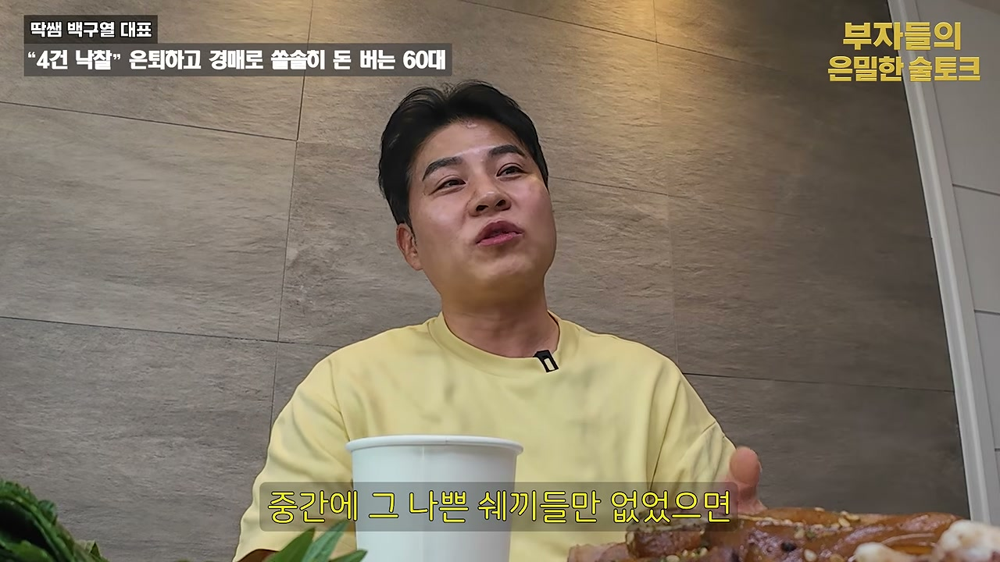
강사는 명도의 본질을 "사람과의 대화"로 정의한다. "명도라는 것도 사람과의 대화를 풀어 나가는 건데, 미리 모든 것들을 다 걱정하지 마세요, 오는 거에 대해서 사실 대응의 영역이다"라고 말한다. 이어 "제가 그 얘기 했잖아요, 대응을 하는 건데 그 대응조차로 저희가 같이 옆에서, 저희는 너무 많은 걸 알기 때문에 얘기해 드릴테니까 마음 편하게 계셔"라고 안심시킨다. 진행자는 "잘했다"라고 거들고, 강사는 "진짜 어머니, 제가 똑같이 얘기해 주거든요"라고 덧붙인다.
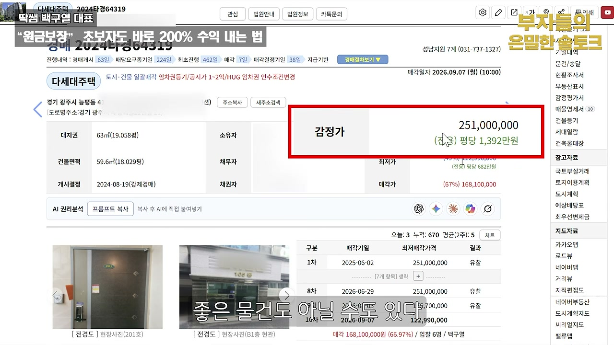
이어 "그러니까 얘하고 나하고 카테고리는 다르지만 본질은 똑같거든, 어차피 이제 그래서 내가 성공의 팔은 마인드셋이 정말 중요하다고 너도 그 얘기 늘 하지"라는 말이 나온다. 경매든 건물이든 공매든 성공의 8할은 마인드셋이라는 주장이다. 진행자는 "너무 많이 하지"라고 농담 섞어 받아치지만, 강사는 "유달리 좀 걱정이 많으셔, 명도에 대한 걱정이 많으셔서"라며 김해 주부의 성향을 짚는다. 진행자는 "다 그래, 엄마 다 그래"라고 공감하며 분위기를 부드럽게 만든다.
9. 20년 자영업을 정리하고 서울로 — 김해 주부의 이력
김해 주부는 "사실은 제가 한 식당 한 20년을 넘게 운영을 했었거든요, 근데 이제 나이도 있고 하다 보니까 힘든 일을 못 하겠는 거예요, 이제 그만둘 시계가 됐는데 이거를 그만두고 나면은 뭐를 할까"라는 고민을 털어놓는다. 이어 "부자 아빠 부자 아들, 그런 책 그런 것도 저는 수시로 많이 봤었어요, 그냥 시간 나는 대로"라고 말한다. 자영업으로 몸이 골병든 상태에서 미래를 준비하기 위해 독서와 공부를 병행했다는 것이다.
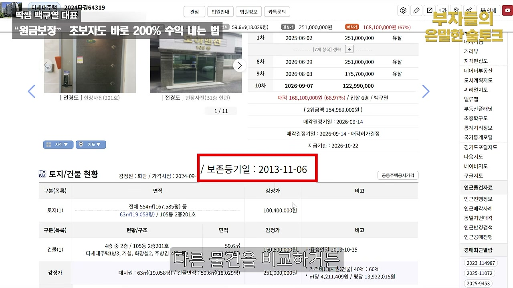
"그래 그러고 있다가 이제 작년 한 10월 달에 이제 마침 이제 식당을 정리를 하게 됐어요, 그래 갖고 그 지방에서 김해에서 다 정리하고 바로 서울 올라와서 바로 딱 선생님을 찾아갔어요"라며 실행력을 보여준다. 진행자는 "딱샘이 이렇게 전직 선생님이라는, 선생님은 오르고 바르고 그런 걸 가르치잖아"라고 말하고, 강사는 "나도 사기 안 당하고 좋은 사람을 만났으면, 어머니 나도 자영업 20년 했단 말이에요, 근데 골병되면서 여기까지 안 왔을 거예요, 중간에 이렇게 나쁜 체키들 못 썼으면"이라고 자기 경험을 비춰 이야기한다.
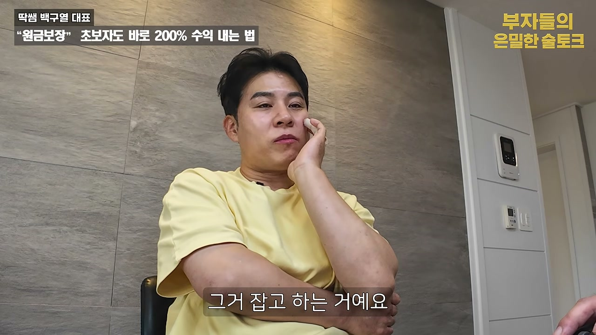
강사는 "그런 책임 가지고 넌 더 열심히 해 줘야 되고, 경매에서 여기 스킬 로아웃도 있단 말이야, 낙찰 받은 사례라든지"라며 교육의 책임을 강조한다. 이어 "너 노트북 갖고 오지 않았냐?"라고 물으며 "제가 최근에 받은 거를 어떻게 수익화 내는지를 스킬적으로 좀 보여 드려, 실제 제가 낙찰받는 걸 보여 드려야 진짜 좋으실 것 같아서"라고 말한다. 이는 추상적인 이론이 아니라 실제 낙찰 사례와 수익화 과정을 보여주겠다는 뜻이다.
10. 실전 사례 — 경기도 광주 빌라의 조건 분석
실전 사례로 "경기도 광주에 있는 거고 빌라"가 등장한다. "낙찰가가 1억 6,810입니다"라고 밝히며, "경매적으로는 기본적으로 시세보다는 싸게 사야 돼요"라고 원칙을 제시한다. 이어 "이제 오해하시는 게 감정가라는 게 항상 잡히지만 이 감정가는 법원이 산정한 거지 시세는 아니에요, 그래서 절대 감정가 대비 많이 떨어졌다 해서 좋은 물건이 아닐 수도 있다"라고 경고한다. 감정가와 시세를 혼동하면 안 된다는 핵심 포인트다.
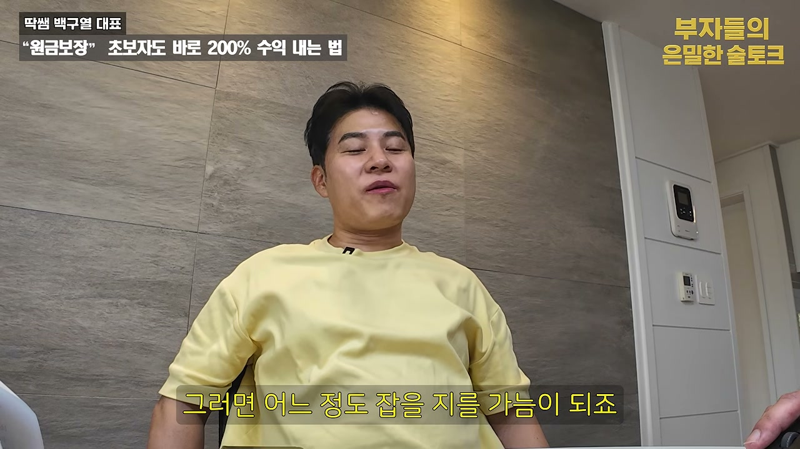
물건의 조건은 다음과 같다. 건물 면적 18평(전용), 공급 면적은 아파트 25평형 대, 2층, 2013년 준공으로 2026년 기준 13년 차, 105동으로 단지형 빌라, 방 3개와 화장실 2개. 강사는 "층수도 중요합니다, 2층이구나, 빌라 하면은 최대 5층까지 있는데 2층, 3층이 메인입니다"라고 설명한다. 또한 "2013년에 준공됐기 때문에 현재 26년 기준으로 13년 정도 된 거구나, 이런 것들 머릿속에 넣어야 다른 물건을 비교하거든요"라며 연식의 중요성을 강조한다.
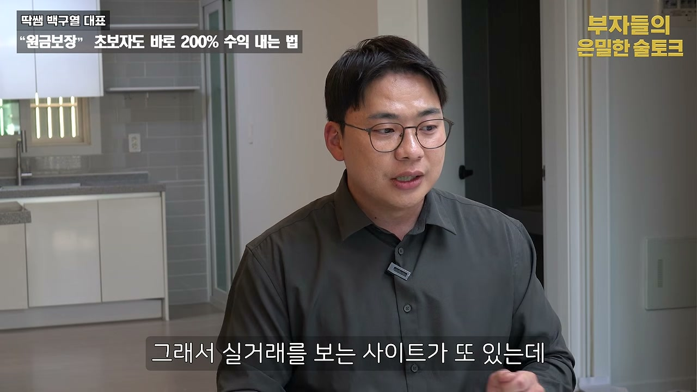
단지형 빌라라는 점도 플러스 알파로 작용한다. "빌라는 보통 한 동이에요, 근데 105동이 있다는 거는 단지형으로 이루어진 빌라구나, 여기서 조금 더 플러스 알파가 됩니다, 선호를 하거든, 관리를 잘해서"라고 설명한다. 아파트는 커뮤니티 시설이 있지만 빌라는 없어서, 단지형으로 관리가 잘 되거나 엘리베이터가 있으면 선호도가 높아진다는 것이다. "가장 중요한 이제 방위 개수가 또 중요해요, 여기 보면 방이 하나 둘 세 개구나, 쓰룸인지 투룸인지도 중요하거든요, 그리고 보면 화장실이 하나 둘, 아 방 세 개 화장실 두 개짜리 빌라구나"라며 상품성을 정리한다.
11. 시세 파악의 기술 — 네이버 부동산과 부동산 플래닛
시세 파악의 첫 단계는 네이버 부동산이다. 강사는 "네이버 부동산이 굉장히 잘 돼 있잖아요, 아파트 볼 때도 그 많이 활용하니까, 네이버 부동산 가시면 사실 필터링할 수 있는 기능들이 많아요"라고 말한다. 빌라·매매·방 3개·화장실 2개·사용승인 4~15년 필터를 적용해 주변 시세를 좁혀나가는 방식이다. 다만 "네이버 부동산은 호가이기도 하죠, 팔고 싶은 사람이 얼마 받고 싶지만 실거래는 더 다를 수 있죠"라며 호가의 한계를 명확히 짚는다.
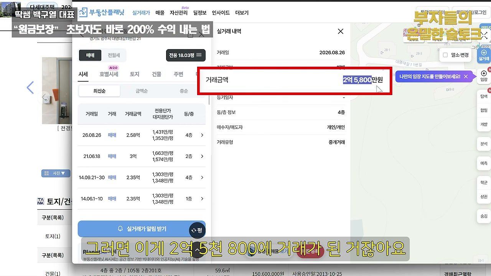
필터링 결과 같은 건물 4층 18평이 2억 9,000만 원에 매물로 나와 있었고, 옆 건물 1층 18평은 3억 2,000만 원, 다른 18평 빌라는 2억 8,000만 원에 나와 있었다. 강사는 "그러면 지금 현재에 나와 있는 물건도 2억 9천이 너무 과도한 금액은 아니겠네, 이런 식으로 잡아가는 거예요, 하나하나"라고 설명한다. 주변 호가를 통해 2억 9,000만 원이 시장에서 용인되는 가격대인지 가늠하는 과정이다.
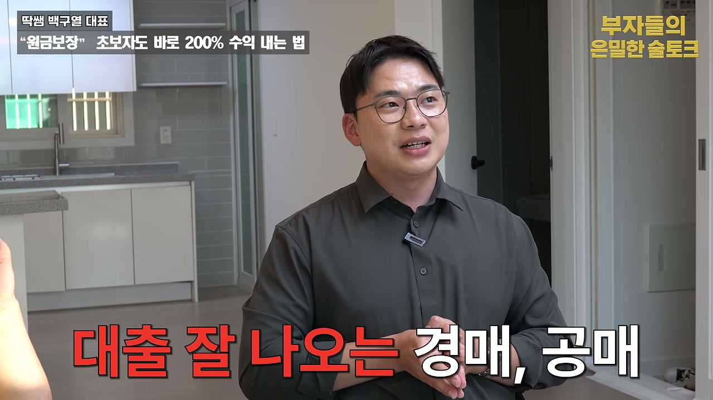
다음 단계는 실거래 확인이다. "이제 손품만 하면 안 되기 때문에 실제 거래는 얼마 이루어졌을까도 보면 좋아요, 그래서 실거래를 보는 사이트가 또 있는데 요새는 이 부동산 플래닛이라는 사이트를 많이 씁니다, 지도가 연동이 되고요, 넘어가면 실제 26년, 24년, 25년 실거래들이 찍혀져 있어요"라고 소개한다. 실제로 2026년 8월 4층 18평이 2억 5,800만 원에 거래된 기록이 확인된다. 강사는 "2년 8월이면 사실 두 달밖에 안 됐죠, 지금 10월 초니까"라며 최신성을 강조한다.
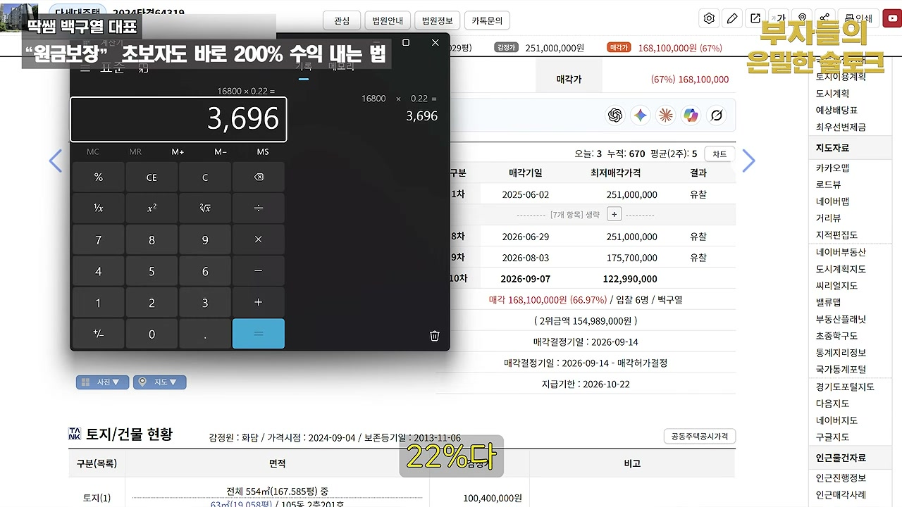
실거래를 볼 때 가장 중요한 체크 포인트는 '중계 거래' 여부다. "옆에 눌러 보면 이게 또 중요해요, 중계 거래여야 돼요, 근데 사실 직거래로 뜰 때도 있는데 이거는 사실 호가적업, 약간 허위매물, 그래서 중계 거래인지를 마지막 체크만 해주면"이라고 설명한다. 호가 2억 9,000만 원, 실거래 2억 5,800만 원을 확인한 뒤 "그러면 우리는 못해도 2억 6천은 진짜 가능하겠다가 잡혀가는 거예요"라고 목표 매도가를 설정한다. 입찰 당시 최저가는 1억 2,290만 원까지 유찰된 상태였고, "이 이상만 쓰면 되는데"라며 2억 4,000만 원 이상 매도가 가능하다면 "볼 만하겠는데"라는 판단에 이른다.
12. 대출과 22% 자기자본 — 3,700만 원으로 시작
경매·공매 시장의 큰 장점은 대출 접근성이다. 강사는 "많은 분들이 대출을 일으키고 싶지만 안 나오니까 어려워하시거든요, 그럼 자본금이 많아야 되니까, 근데 경매 시장은 아예 대출 영업, 경매·공매 대출이 따로 있어요"라고 설명한다. "사실은 모든 은행이 취급하지 않아요, 그래서 잘 모르세요, 하지만 이걸 취급하는 은행은 너무 많아요, 그래서 낙찰가 기준으로 대출이 나요, 요새는 낙찰가의 80%까지는 대출을 해 줘요"라며 구체적인 수치를 제시한다.
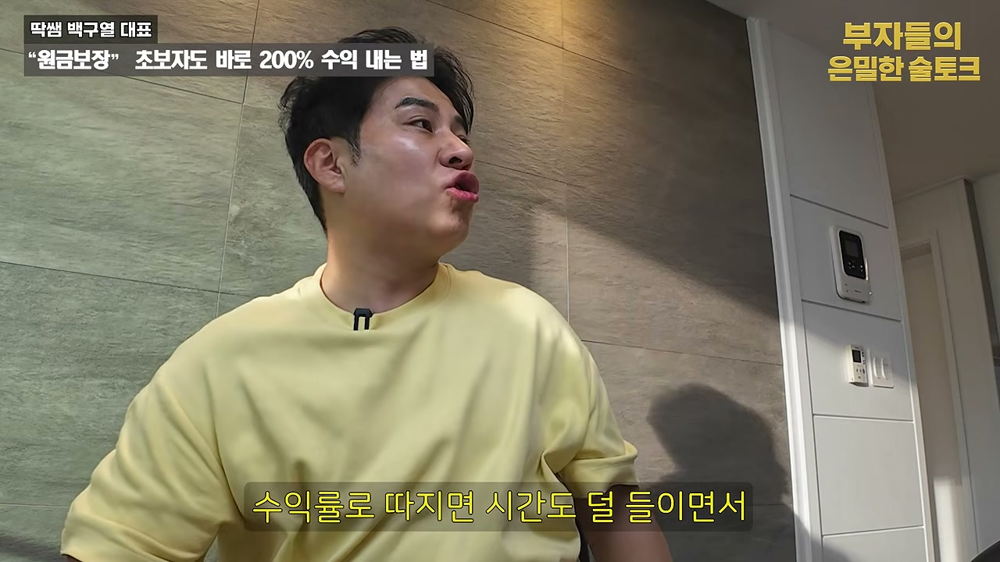
자기자본은 20%에 취득세와 부대비용을 더해 약 22%가 필요하다. "당연히 취득세도 들 수 있고요, 부대비용이 들어요, 취득세는 보통 낙찰가 1.1%인데요, 보통은 넉넉하게 잡아요, 그러면 내 돈은 22%가 필요하다는 거거든요"라고 계산한다. 1억 6,810만 원의 22%는 약 3,700만 원으로, "이거가 있으면 내 소유권을 받아오는 거예요"라고 말한다. 물론 "대출 이자가 나갈 수 있겠죠, 당연히 그것도 다 산정을 하고 하는 거예요"라며 이자 비용도 고려해야 한다고 덧붙인다.
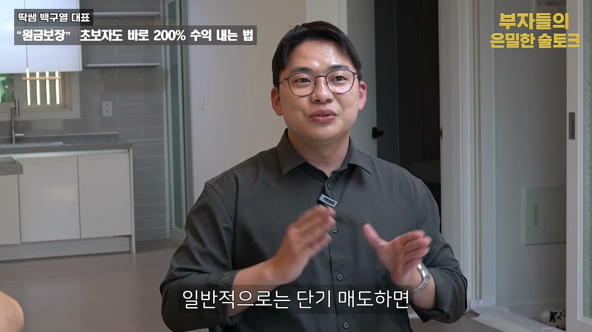
매도 전망도 구체적이다. "제가 낙찰을 받았고 이거 팔려면 얼마에 팔아줄 수 있나요 했더니 부동산에서 여러 군데서 얘기하는 거는, 지금 내놓으면 당장 손님 붙일 수 있는 게 2억 4천이면 바로 계약 수 있다, 근데 한 달 두 달만 기다리면 2억 6천도 가능하다라고 여러 군데에서 얘기를 했거든요"라고 설명한다. 즉, 즉시 매도 시 2억 4,000만 원, 1~2개월 대기 시 2억 6,000만 원이라는 두 가지 시나리오가 제시된 것이다.
13. 수익 계산 — 3,700만 원으로 9,200만 원, 200% 수익
2억 6,000만 원에 매도할 경우 차익은 9,200만 원이다. "제가 받은 게 1억 6,800이니까 차익이 9,200이죠, 내 돈은 3,700 들어서 9,200의 차익이 생기는 거죠"라고 계산한다. "많이 잡아도 세네 달, 내 돈 들어가고 회수하는 데까지의 기간이 3, 4개월에 9,200만 원이면 괜찮은 거죠"라며 투자 회수 기간도 짧다는 점을 강조한다. "수익률로 따지면 시간도 덜 들리면서, 기간이 3, 4개월이니까, 그러니까 거의 200% 넘는 수익이야"라는 결론이 나온다.
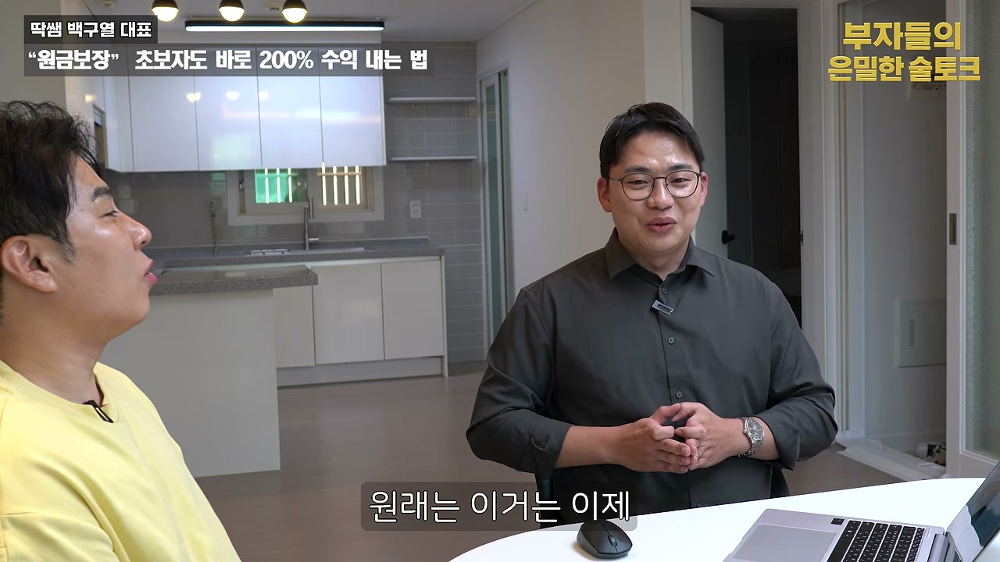
원금 보장의 논리도 다시 강조된다. "이 원금이 사실상 보장된다는 거죠, 왜냐면 사실 주식도 정말 좋은 투자지만 원금 손실에 대한 위험성이 좀 있죠, 하지만 이거는 시정가보다도 애초에 싸게 사니까 이미 안전 마진이 확보된 상태로 가다 보니까 더 먹냐 덜 먹냐의 차이지 이를 일은 거의 없어"라고 설명한다. 주식은 원금 손실 위험이 있지만, 경매는 시세보다 낮은 가격에 매수해 안전 마진을 확보하기 때문에 손실 가능성이 극히 낮다는 주장이다.
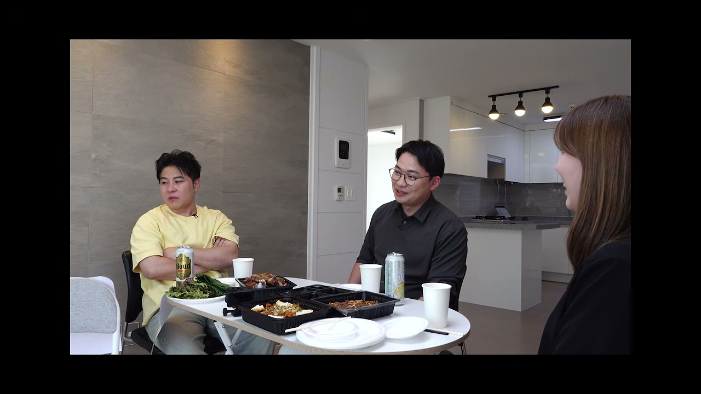
세금 문제도 빼놓지 않는다. "많은 분들이 오해하시는 게, 그럼 단기적으로 팔았다 보니까 세금을 내야 돼요, 이게 다 수익은 아니에요, 세금을 많이 낸다 생각하시지만 여기서 팁을 드리자면 경매할 때는 매매 사업자라는 사업자가 따로 있어요, 이걸 이용하면 단기 매도를 해도 절세가 됩니다"라고 설명한다. 일반적으로 단기 매도 시 차익의 77%가 세금이고, 80%로 잡으면 9,200만 원 중 7,200만 원이 세금으로 나간다. 그러나 매매 사업자를 활용하면 세율이 25%에서 20% 수준으로 낮아져 "거의 한 7,000만 원 정도 남는다"는 결론에 이른다. "다 떼고도 현금이 7,000만 원 남는 거니까 괜찮은 장사"라는 평가다.
14. 구독자 선물 — 40분짜리 무료 강의 4개
영상 말미에는 구독자들을 위한 깜짝 선물이 등장한다. 진행자가 "이런 자료를 한 번만 보고 우리 구독자들 다 할 순 없어, 특히 너 뭐 영상 같은 거 맞배기로 좀 주면 안 되냐?"라고 요청하자, 강사는 "원래는 이거는 이제 돈 주고 봤지, 어 근데 이거는 구독자분들이시니까 그냥 이거는 제가 드릴게"라며 "공 한 40분짜리 강의가 한네 강 정도"를 무료로 공개하겠다고 한다. 진행자는 "대박이"라며 박수를 치고, "와, 그런 귀한 거를"이라고 놀라워한다.
강사는 "근데 대신 그거를 꼭 제발 여러 번 보셨으면 좋겠어요, 왜냐면 다 가져가시는 게 좋으니까"라고 당부한다. 이어 "영상 댓글에 안 달면 안 주는 걸로 하자"라며 조건을 걸고, "귀한 거 내가 부탁해서 했는데 어떻게 영상에 댓글도 안 달고 신청도 안 하고 강의를 해 보니까 알겠더라고, 공짜이고 귀한지 모르거든"이라고 설명한다. 진행자가 "그럼 주지 말까요?"라고 농담하자 "그러면 안 되지, 그건 아니지, 그래도 우리 구독자들 보는 걸로 약속했으니까"라고 답한다.

마지막으로 진행자는 "우리 현숙 누님은 숙제 안 한 티가 딱 나네, 얼굴에"라며 웃음을 유발하고, "안 하고 저렇게 물건 사면 안 된다게, 얼굴 봐봐, 딱 안 하게 생겼는데 말 더럽게 안 듣게 생겼냐?"라고 농담을 이어간다. 이에 강사는 "많이 안 해도 결과했는데"라고 거들고, "그니까 저렇게 뽀록으로 해 보면 안 된대"라며 공부 없이 운에 맡기는 투자를 경계한다. 영상은 "나중에 공, 근데 공부는 죽을 때까지 해야 돼"라는 말로 마무리된다.
주요 인용 및 발언
"원래 전세 살고 있었는데 전세금 다 빼 가지고 여기다가 이제 한 거예." — 첫 번째 투자자, 전세금을 모두 투입한 배경 설명
"이게 리스펙이야." — 진행자, 전세금까지 빼서 투자한 결단력에 대한 평가
"거의 200% 넘는 수익이야." — 진행자, 5개월 만에 1억 5,000만 원 차익을 낸 사례에 대한 반응
"그 나라가 갖고 있는 부동산들이 또 나와요. 목이 좋아요. 또 주요 요지에 다 있어." — 공매로 나오는 국가 소유 부동산의 입지적 우위
"한 번만 폐찰되고 네 번을 다 낙찰받았거든요." — 김해 주부, 9개월 동안 5번 입찰해 4번 낙찰받은 성과
"생각이 없어요. 생각이 깊지 않다는 거야. 그래서 돈을 벌어." — 진행자, 경매로 돈 버는 사람들의 특징에 대한 역설적 표현
"이런 분들이 경매로 돈을 벌어요. 그래서 똑똑한 사람들이 오히려 못 해요." — 강사, 경매 수익과 학벌·논리적 사고의 무관함
"진짜 돈 버는 머리는 또 다르죠." — 진행자, 실전형 의사결정 능력의 중요성
"정말 돈이 없어서 사실 경매를 하는 거지, 많으면 일반 매매해야 돼요." — 강사, 경매 투자의 현실적 출발점
"경매라는 것 자체가 다양하게 쏟아지지만 내가 원하는 물건이 나오진 않아요." — 강사, 경매의 한계
"그래서 나는 경매하지 말라 그래. 형은 건물이잖아." — 강사, 건물 투자와 경매 투자의 결이 다름을 설명하며
"명도라는 것도 사람과의 대화를 풀어 나가는 건데, 미리 모든 것들을 다 걱정하지 마세요. 오는 거에 대해서 사실 대응의 영역이다." — 강사, 명도에 대한 조언
"성공의 팔은 마인드셋이 정말 중요하다." — 강사, 경매 성공의 핵심 요인
"경매적으로는 기본적으로 시세보다는 싸게 사야 돼요." — 강사, 경매 투자의 대원칙
"감정가라는 게 항상 잡히지만 이 감정가는 법원이 산정한 거지 시세는 아니에요." — 강사, 감정가와 시세의 구분
"결국에는 내가 이 가치가 진짜 시장에서 얼만지를 확인하는 작업이 경매의 본질이거든요." — 강사, 시세 파악의 중요성
"낙찰가의 80%까지는 대출을 해 줘요." — 강사, 경매·공매 전문 대출의 조건
"이 원금이 사실상 보장된다는 거죠." — 강사, 시세보다 싸게 매수함으로써 확보되는 안전 마진
"싸게 사니까 이미 안전 마진이 확보된 상태로 가다 보니까 더 먹냐 덜 먹냐의 차이지 이를 일은 거의 없어." — 강사, 경매 투자의 손실 가능성에 대한 평가
"공부는 죽을 때까지 해야 돼." — 강사, 영상의 마지막 메시지
결론 및 시사점
이 영상은 경매·공매 투자를 "소액으로 시작해 큰 수익을 낼 수 있는 현실적인 자본 축적 수단"으로 위치시킨다. 첫 번째 사례는 전세금 2억 8,500만 원을 모두 투입해 5개월 만에 1억 5,000만 원의 차익을 낸 극단적인 성공 사례이고, 두 번째 사례는 20년 자영업을 정리한 60대 주부가 9개월 만에 4건을 낙찰받아 4,200만 원과 6,000만 원의 차익을 낸 사례다. 두 사례 모두 공통적으로 "시세보다 싸게 산다"는 경매의 대원칙과 "명도는 사람과의 대화"라는 마인드셋, 그리고 "공부는 죽을 때까지"라는 태도를 강조한다.
실전 방법론은 매우 구체적이다. 감정가가 아닌 실거래가를 기준으로 시세를 파악하고, 네이버 부동산으로 주변 호가를 필터링한 뒤, 부동산 플래닛으로 중계 거래 실적을 확인한다. 대출은 낙찰가의 80%까지 가능하며, 자기자본 20%와 취득세 1.1%를 포함해 약 22%의 초기 투자금이 필요하다. 1억 6,810만 원짜리 빌라의 경우 약 3,700만 원으로 시작해 3~4개월 만에 9,200만 원의 차익을 낼 수 있고, 매매 사업자를 활용하면 세금을 20~25% 수준으로 낮춰 약 7,000만 원의 현금을 남길 수 있다는 계산이 제시된다.
그러나 영상은 경매의 위험성도 분명히 경고한다. 경매 학원 사기 사건(피해 100억 원대)은 레버리지와 대출이 잘 되는 시장의 이면에 사적 융통과 돌려막기 같은 금융 사고가 도사리고 있음을 보여준다. 또한 경매는 원하는 상권과 입지를 골라 살 수 없고, 명도 과정에서 예상치 못한 어려움이 발생할 수 있으며, 단기 매도 시 세금 부담이 크다는 점도 명시된다. 결국 경매는 "돈이 없어서 시작하는 중간 단계"이지, 모든 사람에게 맞는 최종 투자 수단은 아니라는 것이다.
영상의 실용적 시사점은 다음과 같다. 첫째, 경매·공매는 소액으로 시작할 수 있지만 철저한 시세 파악과 현장 조사가 필수다. 둘째, 대출 구조와 세금 제도를 미리 이해해야 실제 수익을 정확히 계산할 수 있다. 셋째, 명도와 같은 심리적 장벽은 사전에 걱정하는 것이 아니라 발생 시 대응하는 영역이며, 전문가의 도움을 받는 것이 효율적이다. 넷째, 경매는 최종 목적지가 아니라 좋은 물건을 일반 매매로 살 수 있는 자본을 모으는 디딤돌로 이해해야 한다. 영상은 이러한 원칙을 지키면서 꾸준히 공부하고 실행할 것을 강조하며, "공부는 죽을 때까지 해야 된다"는 말로 마무리된다.
댓글
GitHub 이슈 기반 댓글 시스템입니다.